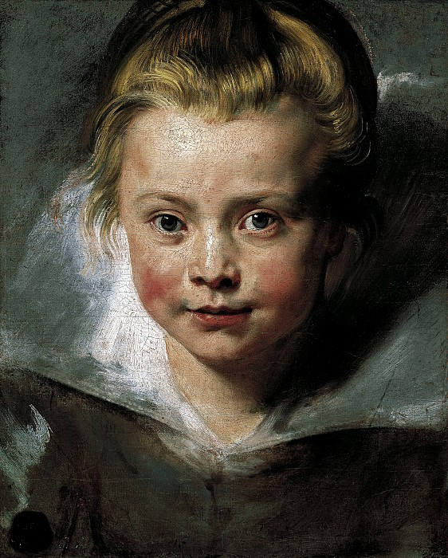

Афишей выставки «Рубенс, Ван Дейк, Йорданс… Шедевры фламандской живописи из собраний Князя Лихтенштейнского» является портрет
Клары Серены, дочери художника Питера Пауля Рубенса (1577-1640). Ей около пяти лет, а жить ей уготовано всего лишь двенадцать лет.
Не хочется думать об этом, когда смотришь на ее прелестное радостное личико, полное детской непосредственности. На портрет не было официального
заказа, художник писал картину не на продажу, а для себя.